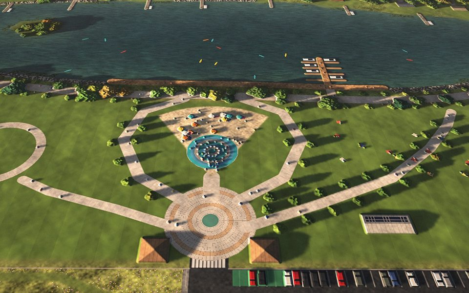
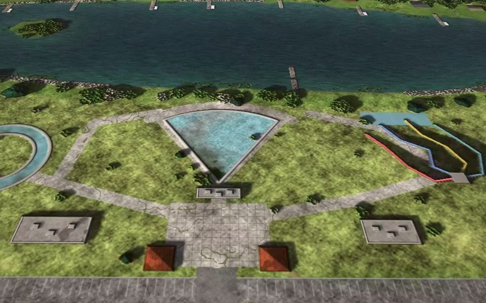

Vantage · open source
A year over one site, in one scroll.
Vantage is an engine I built for people who watch one piece of ground change for a year. It takes a season of drone flights over the same site, locks every one of them to a single camera, and turns them into a story you scroll on a phone — with the films and an offline copy made by the same command.
Open the demo storySimulated imagery · a made-up park, flown by a made-up drone


How it works
Four steps, and only the first one needs a drone.
- Fly the same route. Every few weeks, the same flight over the same ground. Video, stills or both — Vantage takes whatever the drone brings home.
- Line every visit up to one camera. It picks the best frame from each flight and registers it to the others — position, angle and colour — so the only thing that moves is the site.
- Write the story in a file. Chapters, captions and notes pinned to the ground live in one plain text file, and every figure the page prints has to say where it came from.
- Run one command. Out come the page, the time-lapse films and a copy that works with no signal, dressed in the client’s own colours and type.
What you get
One site, four ways to hand it over.
- A page to send Scroll it on a phone, add it to the home screen, save it before the site visit with no signal.hosted · installable
- One file The whole story in a single HTML file — double-click and it opens. A lighter edition rides along for email.single-file HTML
- An offline copy Every image at full size in a zip that opens from a laptop, a USB stick, a meeting room with no wifi.offline zip
- The films A 16:9 time-lapse for the big screen and a 9:16 cut for phones, from the same flights.16:9 · 9:16 MP4
Get Vantage
It’s open source. Build the demo yourself.
You need Python 3.11 or newer, uv and ffmpeg. The
first line fetches the parts, the second invents a site and flies over it a dozen times, and
the third serves what it made at localhost:8000.
$ uv sync
$ uv run vantage demo --fast
$ uv run vantage preview demo-lakesideAbout the pictures. Everything in the demo is simulated: the site, the park, the organisations and the people quoted are made up, and the drone is a couple of thousand lines of Python pretending to be a camera. That’s on purpose — it means the demo can be rebuilt from nothing, by anybody, every time the engine changes.